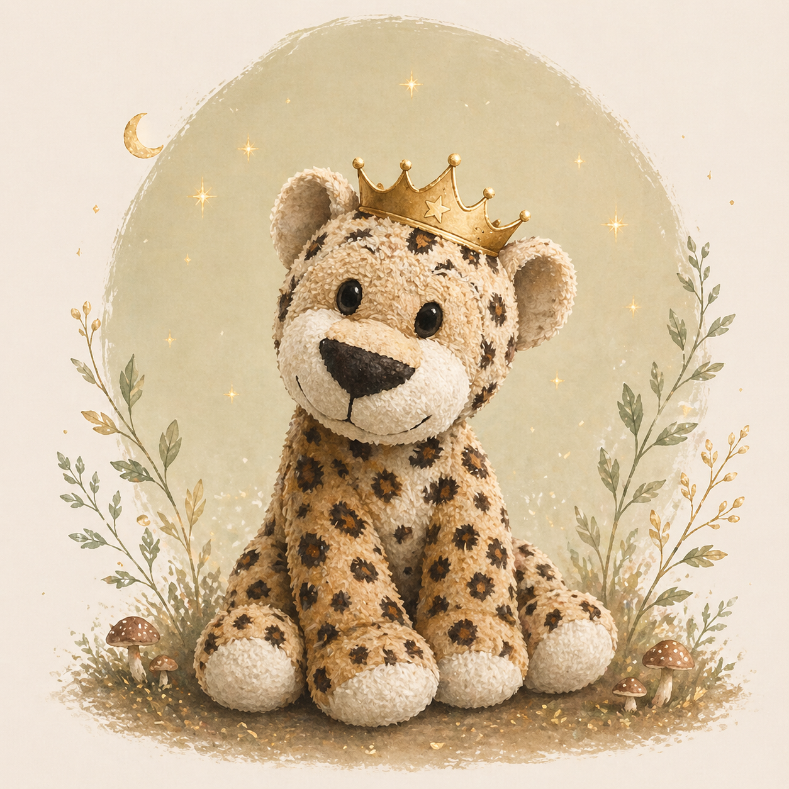

01

Er setzt Grenzen so hart, dass niemand seine Angst sieht.
Tigi sagt „nein" mit ganzer Kraft — weil „ich brauche Hilfe" sich noch nicht sicher anfühlt. Wenn ein Raum knistert, tritt Tigi oft zuerst vor. Stark, schnell und kontrolliert. Nicht, weil Stärke sein Hobby ist.
„Ich bestimme, was hier passiert."